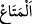

KIYÂMET GÜNÜ
ADALET TERAZİLERİ
KURARIZ
44. Evet, onları da, atalarını da barındırdık. Nihâyet ömür kendilerine (hiç
bitmeyecek gibi) uzun geldi. Oysa onlar, bizim gelip (kâfirlere âid) araziyi
çevresinden eksilteceğimizi görmezler mi? Şu halde, üstün gelen onlar mı?
45. De ki: Ben, sâdece, vahiy ile sizi ikaz ediyorum. Fakat, sağır olanlar, ikaz
edildikleri zaman bu çağrıyı duymazlar.
46. Andolsun, onlara Rabbinin azabından ufak bir esinti dokunsa, hiç şüphesiz,
”Vah bize! Hakikaten biz zalim kimselermişiz!” derler.
47. Biz, kıyâmet günü için adalet terazileri kurarız. Artık kimseye, hiçbir şekilde
haksızlık edilmez. (Yapılan iş,) bir hardal tanesi kadar dahi olsa, onu (adalet
terazisine) getiririz. Hesap gören olarak biz (herkese) yeteriz.
“Evet, onları da, atalarını da barındırdık.” “
‘ ” uzun süre faydalanmak demektir.
Yâni, biz azîmüşşân o topluluğa ve atalarına maîşet genişliği, emniyet ve esenlik verdik.
“Nihâyet ömür kendilerine” hiç bitmeyecek gibi “uzun geldi.” Yâni,
barınma/faydalanma konusunda müddetleri onlara uzun geldi de buna aldandılar,
devamlı olarak bu halde olacaklarını ve mağlup olmayacaklarını sandılar. Ecel elinin
bu vücûd binasını birbirine katıp toprakla bir edeceğini bilmediler.
“Oysa onlar, bizim gelip (kâfirlere âid) arâziyi” dâru’l-harb olan kâfirlerin
topraklarına gelip de mü’minleri musallat ederek “çevresinden eksilteceğimizi
görmezler mi?” yâni bunlara bakıp da görmezler mi? Hâl böyle iken onlar, bizim
gazabımızdan kurtulabileceklerini nasıl vehm ediyorlar?
Bu ifâdenin Allâh’ın onların memleketlerini müslümanlar vâsıtasıyla tahrip edip
İslâm diyârına katmasının temsil ve tasviri olduğu söylenmiştir. Çünkü Allah,